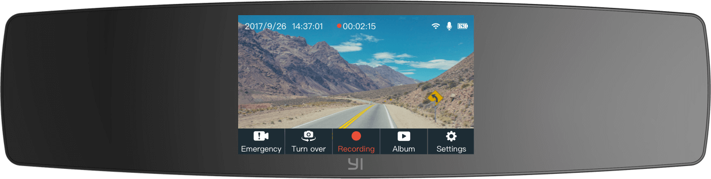
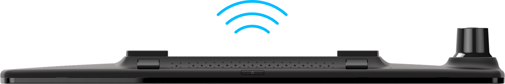

Двойная HD запись
Сенсорный экран 4.3 дюйма
Запись в темное время
Предупреждение столкновения
Wi-Fi передача
Камера-зеркало с записью переднего и заднего вида
Фронтальный вид 138°
В передней камере используется профессиональный датчик изображения с поддержкой большого угла обзора и разрешения видео до 1080P/30fps, для четкого отображения быстрого движение вперед.
Задний вид 120°
Камера заднего вида 720P (AHD-M) HD, которая охватывает весь вид сзади, чтобы гарантировать большую безопасность при движении.
Тачскрин 4.3 дюйма дает вам полный контроль на дороге
Зеркало YI Mirror Dash Camera изготовлено из высококачественного материала с высоким коэффициентом прозрачности для лучшего обзора заднего вида, при этом гармонично вписываясь в интерьер автомобиля. Взглянув на 4,3 дюймовый сенсорный экран, вы легко можете проверить ситуацию на дороге и взять ее под свой контроль.
Большая диафрагма, широкоугольный объектив, для абсолютной четкости
Диафрагма объектива определяет потребление света и качество изображения в условиях низкой освещенности. YI Dash Mirror Camera имеет максимальную диафрагму f/2.0, угол обзора спереди 138° и угол обзора сзади 120°, это обеспечивает отличное качество изображения в ночное время.
Стеклянные линзы + инфракрасные фильтры передают каждую деталь
Небольшой объектив оснащен профессиональными стеклянными линзами с инфракрасным фильтром для удаления бликов и получения более четкого изображения.
Аварийная запись
YI Mirror Dash Camera имеет встроенный 3-х осевой гравитационный датчик с низкой, средней и высокой чувствительностью, который активируется в случае чрезвычайной ситуации и автоматически создает резервные копии записей, которые не будут удалены из-за недостаточной памяти или записи в цикле. Кадры полностью защищены, поэтому вам не нужно беспокоиться о недостатке доказательств, в случае возникновения спора.
Стабильное Wi-Fi соединение на частоте 2.4GHz
Стабильный сигнал Wi-Fi и высокоскоростная передача.
